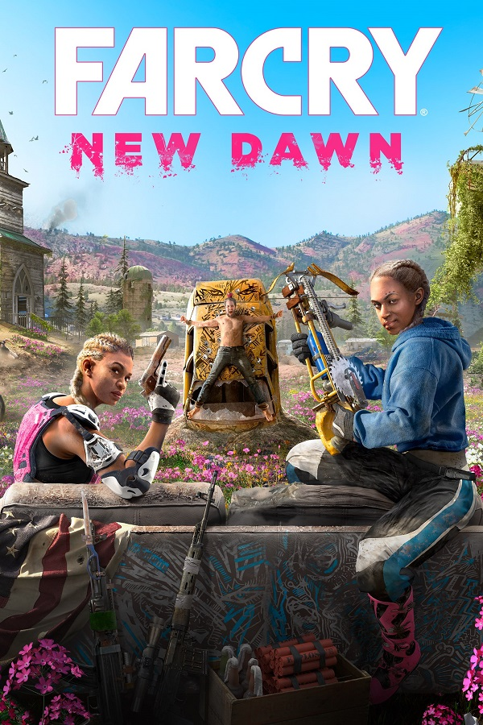
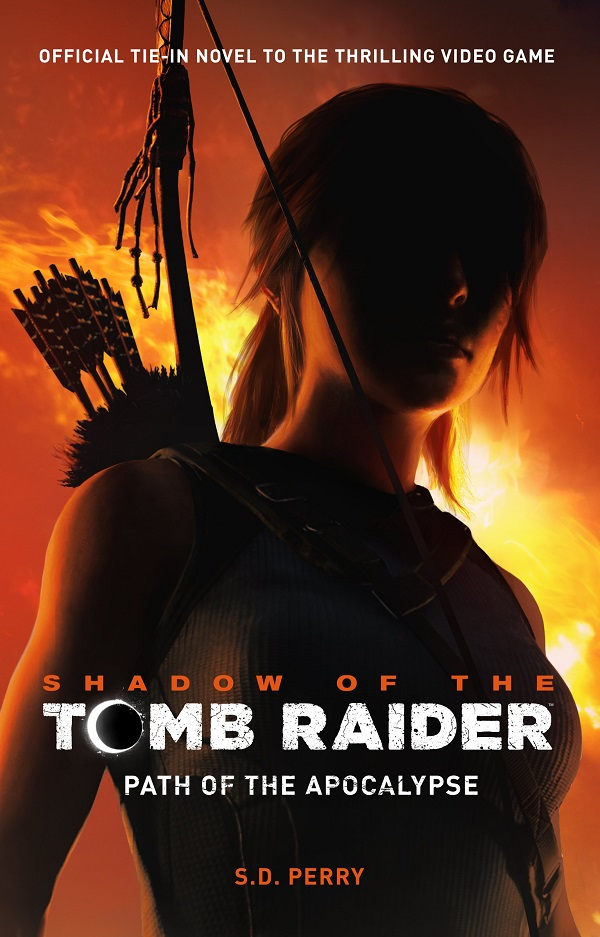
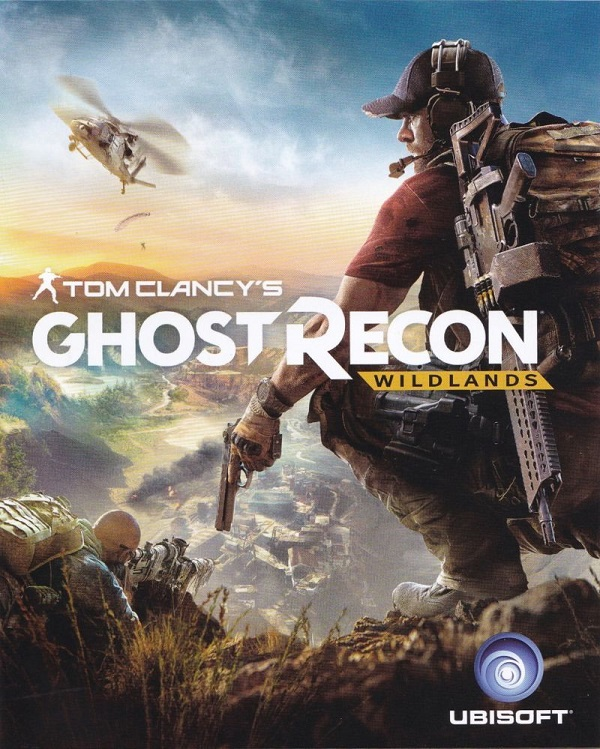

Categories
Adventure:

The Battlefield series goes back to its roots in a never-before-seen portrayal of World War 2. Take on physical, all-out multiplayer with your squad in modes like the vast Grand Operations and the cooperative Combined Arms, or witness human drama set against global combat in ... Read More

Dive into a transformed vibrant post-apocalyptic Hope County, Montana, 17 years after a global nuclear catastrophe. Join fellow survivors and lead the fight against the dangerous new threat the Highwaymen, and their ruthless leaders The Twins, as they seek to take over the last ... Read More

When a young street hustler, a retired bank robber and a terrifying psychopath find themselves entangled with some of the most frightening and deranged elements of the criminal underworld,
the U.S. government and the entertainment industry, they must pull off ... Read More

The world is your playground. Minecraft has the creativity factor and the flexibility matched only by playing with LEGO. There is no better game on PC or console to capture the joy of holding the forces of creation in your hand. Whether you choose to explore the boundless world or to create a ... Read More

In the two months since Rise of the Tomb Raider,Lara Croft (Camilla Luddington) and her friend Jonah Maiava (Earl Baylon) have dedicated themselves to stopping the activities of paramilitary organization Trinity. The two track a cell to Cozumel in Mexico that is led by Pedro Dominguez ... Read More

Tom Clancy's Ghost Recon: Wildlands
Create a team with up to 3 friends in Tom Clancy’s Ghost Recon® Wildlands and enjoy the ultimate military shooter experience set in a massive, dangerous, and responsive open world. You can also play PVP in 4v4 class-based, tactical fights: Ghost War. ... Read More